Jump to information about: UR Food Souls | SR Food Souls| R Food Souls
From start to finish, food souls are the special key thoughout. They are improtant for so many tasks(working in the restaurant, completing stages, completing trials, showdown, catacombs, deliveries...etc). They are a huge part to the game. As you level up, you will find that some Food Souls are better than others. It can sometimes be sad when your favorite food soul can't be on your team because of their stats. It's important to be able to know which Food Souls are the best within their tier.
UR Food Souls:
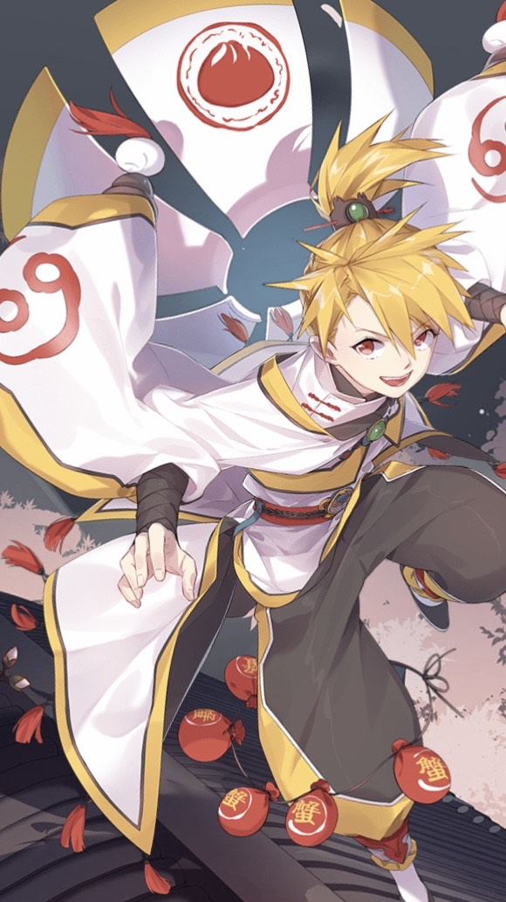Crab Long Bao isn't a very useful one since his shards are rare. His base defense is high so he is useful for a tank team. He is mainly useful for catacombs because of his defense.
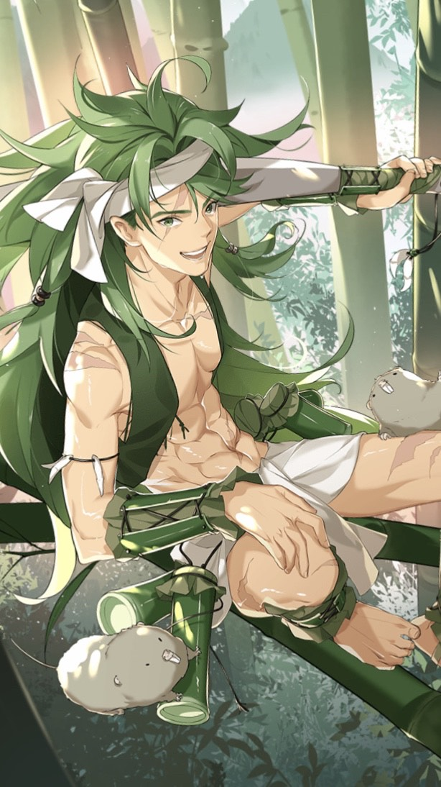Bamboo Rice is a good attacker for any situation. His skills are very powerful and you can get his shards through summoning and fusion. He becomes very powerful once fully ascended.
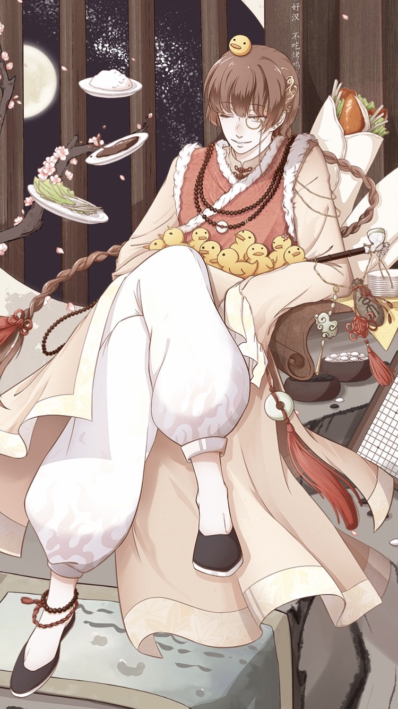Peking Duck is a great food soul when it comes to speed and crowd control. His shards are common from the fusion and you can summon him. His link is with Yuxiang and can use a debuff skill.
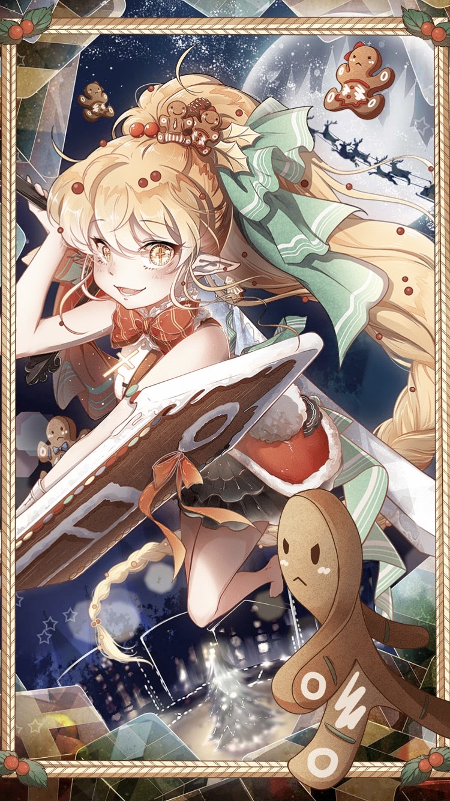Ginger bread is a good soul if you can ascend her. Her shards are very rare. Similar situation to Crab Long Bao , both have rare shards but are very useful once ascended.
Foie Gras is a good food soul for showdowns becuase she is easy to ascend and a good crowd control all around. You can get her through the Benefit event for the first 20 days of playing. You can also summon her or use shard fusion. Her skill is very useful since she is the only one who can confuse a whole team. Its useful in arenas and catacombs too.
SR Food Souls:
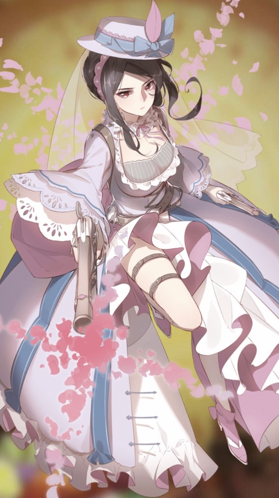Black Tea can easily carry you through the beginning of the game because her shards are very easy to get. She could be the first SR food soul to ascend. Not only can you summon her and fuse shards but you can also get 5 shards from completing daily missions and obtain them through the hard mode stages. Over time she won't be useful but she is good for the beginning.
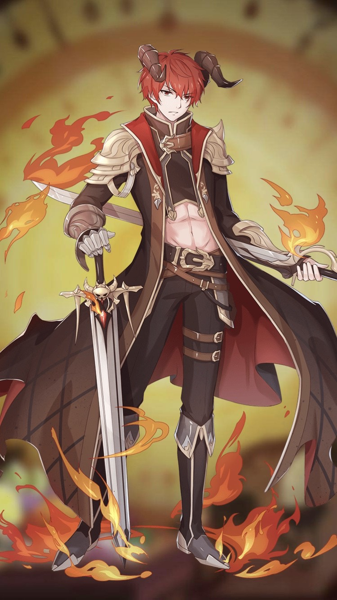Steak is great for players who can't keep using Tom Yum. Steak is a good SR defense, especially once he is ascended to 4-5 stars. He is very easy to ascend if you complete many deliveries. Steak could possibly pass a few UR defenders.
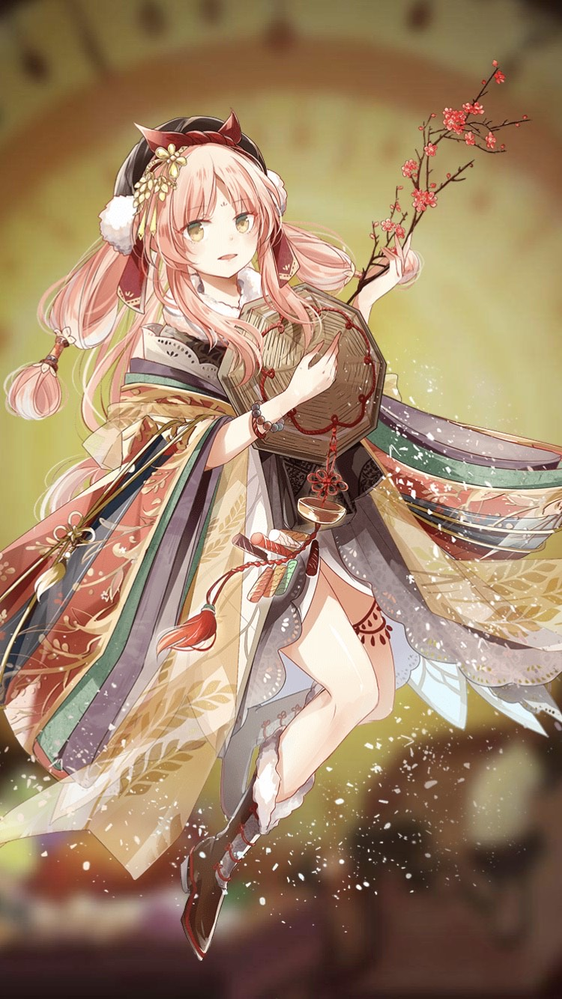Laba Congee is definitly one of the best healers when it comes to Disaster Bosses. She can debuff and heal the entire team. Her shards are not too common but you can attempt to fully ascend her if needed.Even outside of disaster battles, if at least 3 stars she can be useful in other battles too.
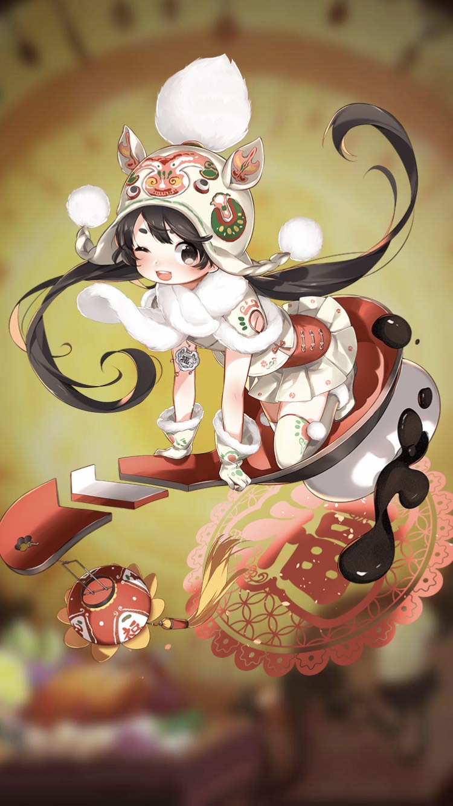Tangyuan has a great energy skill that can block attacks and can link with Moon Cake. She is a huge help with Guild Bosses and becomes a good healer when fully ascended. Her shards are somewhat common so she can be ascended after some time.
Red Wine is a strong soul once ascended. If he has more stars than Sanma he is equivalently as a high single target damage dealer. There is a certain"event" that allows you to recieve his shards while leveling up but it might only max out to 2 stars. Other than that you can summon him or fuse shards.
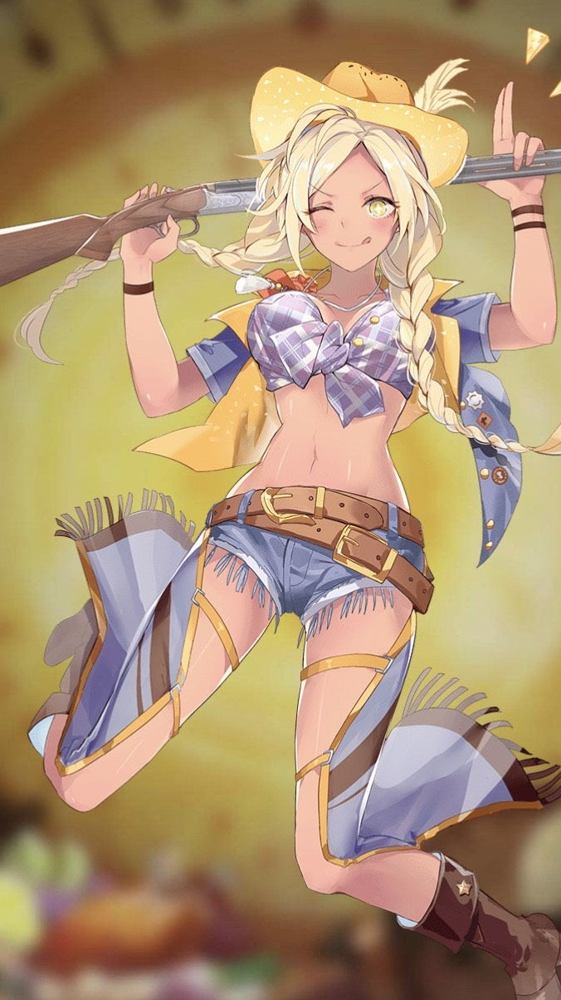American Corn Bread is similar to Sanma but more rarer. Both have similar stats. She is a limited edition soul and can very difficult to ascend pass 2-3 stars.
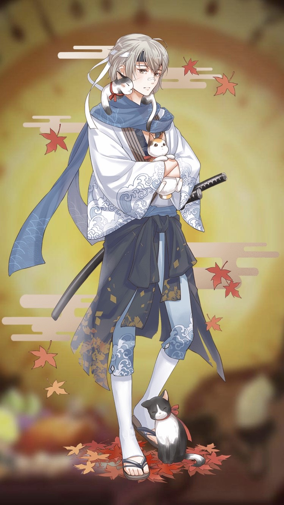Sanma isn't recomended for Arenas or catacombs becuase he doesn't have any crowd control abilities. He is recommended for guild Bosses and Disaster Bosses. His shards are available from summoning, fusions and Air Ships.
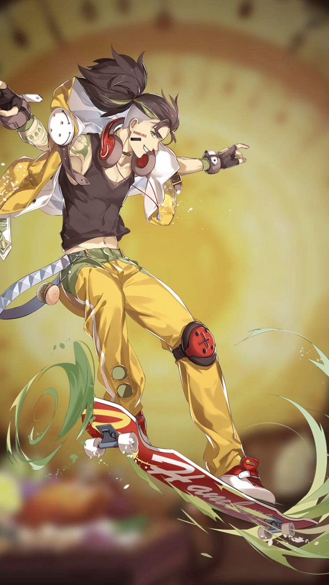Hamburger is a little similar to Black Tea because his shards are common and can be easily ascended. His stats are good and could be part of your top 10 based on soul power. Hamburger shards are available in the showdown shop, summoning, fusions and from Purple Restaurant Chests/deliveries.
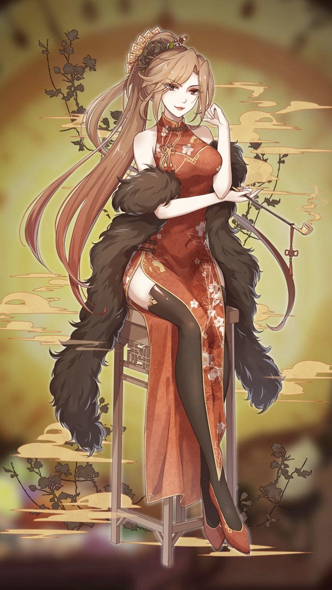Yuxiang is good for showdowns with the linked skill with Peking Duck. She is an easy SR soul to ascend because her shards are common. You can get her shards from Air Ships, summoning and hard mode stages.
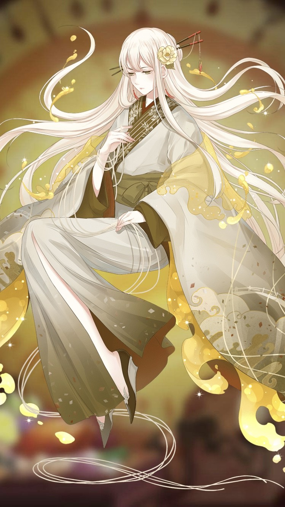Yunnan Noodles is similar to Sanma/Corn Bread/Cassata. It wouldn't matter who you use when it comes to those 4. You always use the food souls with the most stars.
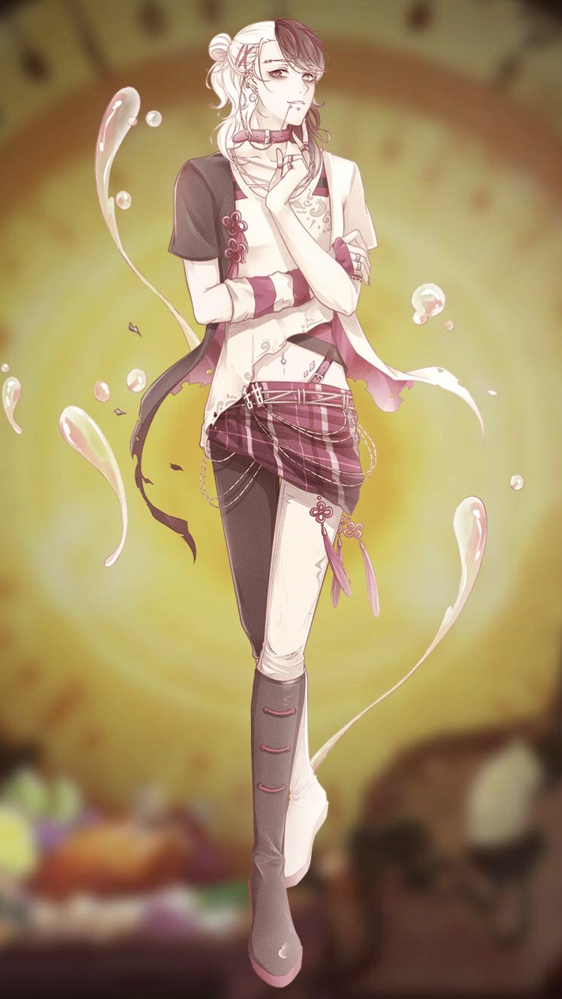Sweet Tofu is the best healer and the only one that is better than Milk without stars. He is very uncommon to summon but you can fuse shards. Sweet Tofu is recommended if you need a healer just for your team without much care about link skills. However compared to his link skill, Laba Congee is better.
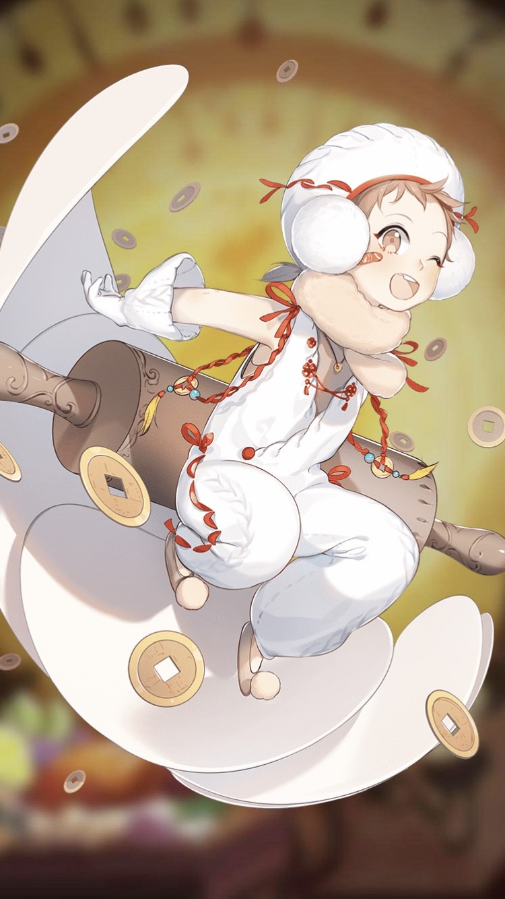Gyoza is extremely rare to summon but worth it. One of the best SR tanks due to his invulnerability and self-heals. Gyoza shards are very rare to get but you can summon them.
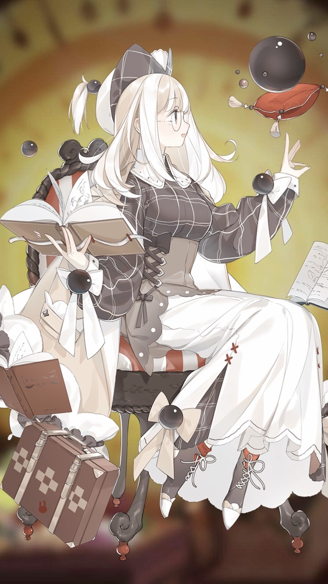Milk Tea is a weaker version of Swet Tofu and doesn't really beat Milk. You can use her if you need a healer if you don't have a good one.
R Food Souls:
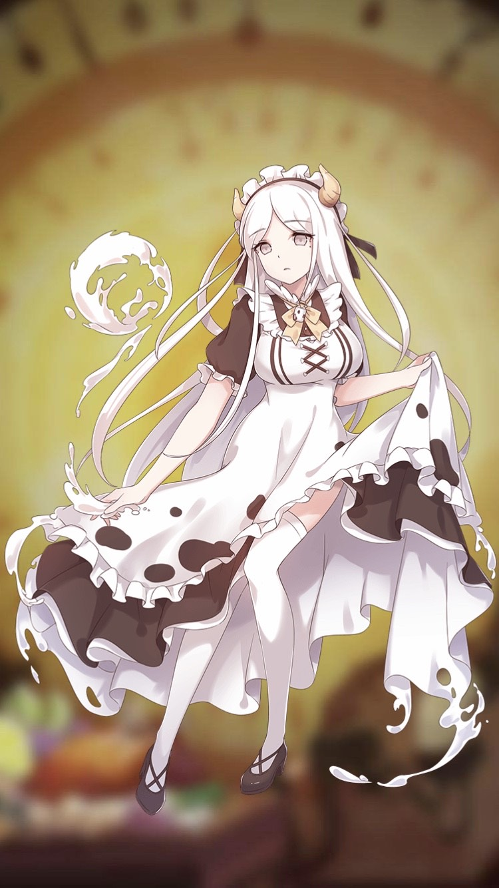Milk is one of the best healers in the entire game. For being an R sood soul, its very impressive. Her shards just like Tom Yum are very common and can easily ascend to 5 stars. She is another food soul that can help you throughout the beginning.
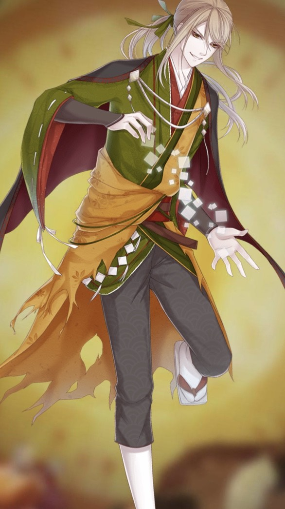Miso Soup may not be a popular soul but he is very powerful. What makes him very strong is his skill over doing more damage versus healing. With the link to Sanma, he becomes more powerful healing less than damage. Miso Soup shards come from summoning and fusion.
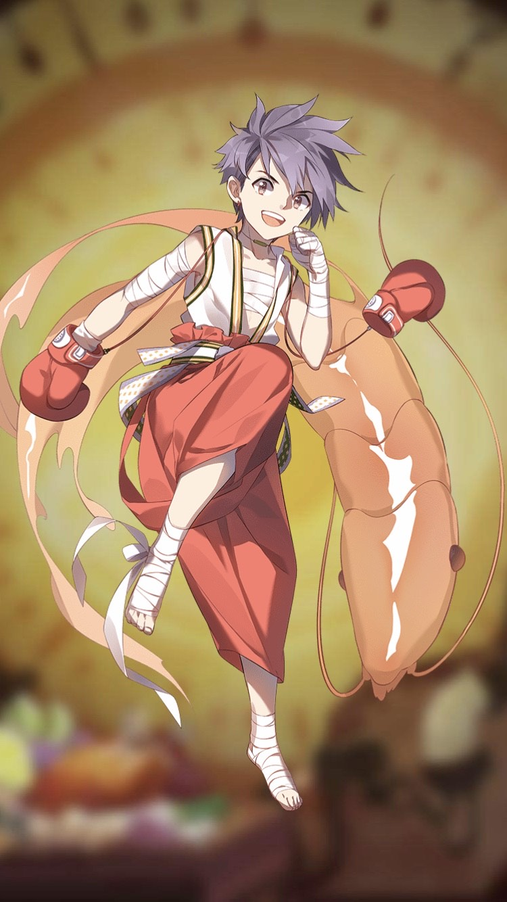Tom Yum is one of the best R defenders and can get you through the beginning. His shards are very common through summoning, fusion and hard mode stages. Tom Yum can beat other SR defenders if he is fully ascended compared to SR souls that aren't ascended.